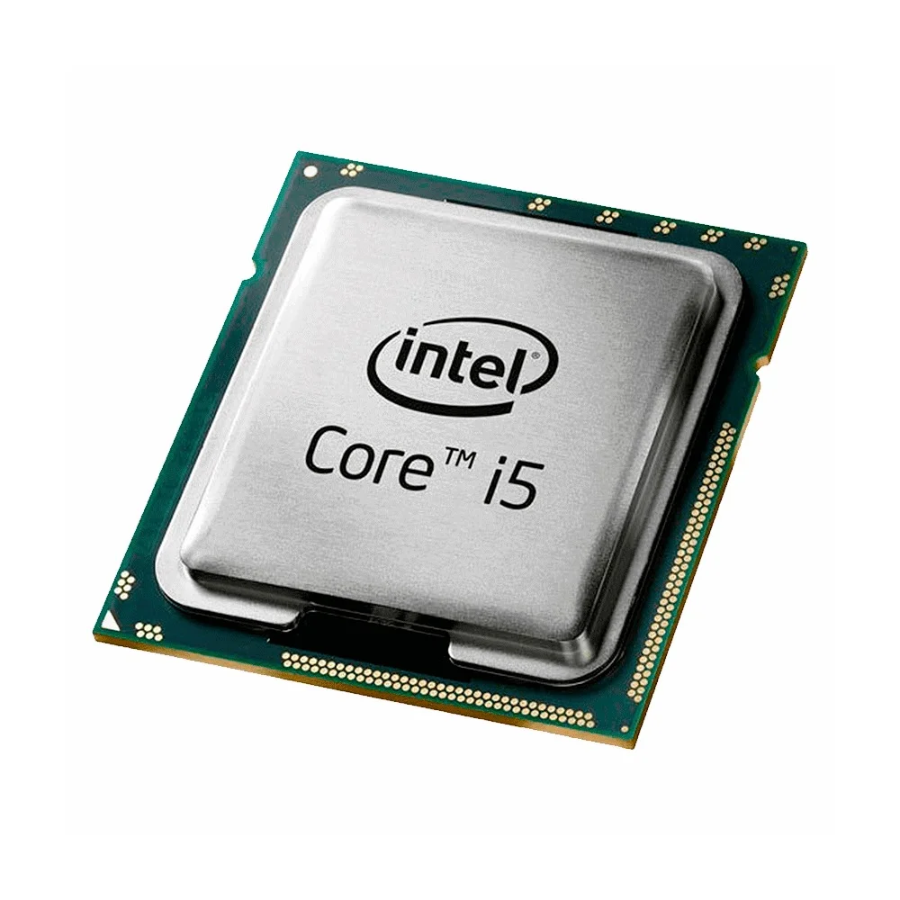
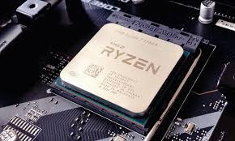
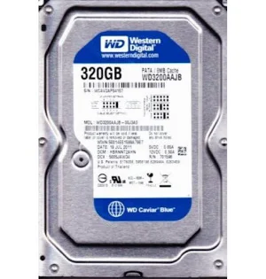
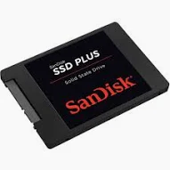

A Processador - CPU (Central Processing Unit, ou Unidade Central de Processamento) é o "cérebro" do computador, responsável por interpretar e
executar instruções, realizar cálculos aritméticos e lógicos.


A memória RAM (Random Access Memory) é o armazenamento temporário e de altíssima velocidade do computador, crucial para o desempenho. Ela guarda dados de
aplicativos em uso para acesso rápido pela CPU. HD é a abreviação para Hard Disk, que em português significa Disco Rígido. Ele é o componente responsável por armazenar permanentemente os seus dados no
computador (como fotos, vídeos, documentos e o próprio sistema operacional). SSD significa Solid State Drive (Unidade de Estado Sólido). É um dispositivo de armazenamento de dados que substitui os antigos HDs, usando memória
flash para ler e gravar informações. Como não tem partes móveis, é muito mais rápido, silencioso e resistente a impactos.


O monitor é um dispositivo de saída essencial que exibe visualmente as informações processadas por um computador, permitindo a interação através
de imagens, textos e vídeos. Ele se conecta à placa de vídeo via HDMI, DisplayPort ou VGA, sendo crucial para tarefas de escritório, design e jogos.
O mouse é um dispositivo apontador e periférico de entrada que permite controlar o cursor na tela e interagir com o computador através de movimentos
físicos e cliques. Ele é essencial para navegar em sistemas operacionais, abrir arquivos, jogar e usar programas.
Na computação, o teclado de computador é um dispositivo que possui uma série de botões ou teclas, utilizado para inserir dados no computador.